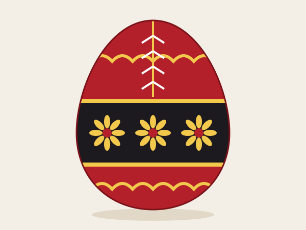
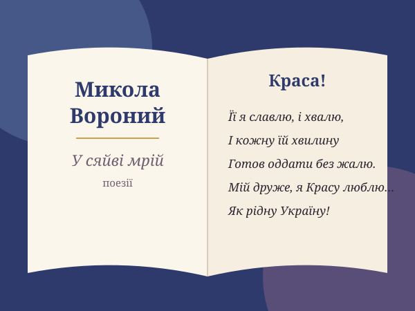

Кольористика — один із ключових засобів творення символізму. Подорож кольорами, якими поет малював свої вірші.
ПочатиКолір здавна відіграє велику роль у культурі людства, і зокрема в культурі українців, які за допомогою кольору розвивали в собі почуття прекрасного. Він впливає не тільки на зір, а й на всі органи чуття.
Асоціації, пов'язані з певним кольором, подібно до запахів та звуків, виробляють емоційну пам'ять і кольоровий символізм. Формуванню цього сприяє наявність кольористики у творах красного письменства.


У художній літературі кольороназви — один із найвиразніших засобів творення образності. Вони допомагають відтворювати настрій, емоційний стан, індивідуальне бачення митця.
Науковиця Л. М. Семененко досліджувала символіку кольорів квітів у творчості поета, а В. Бануляк і В. Ткаченко — його символістські пошуки. Але кольороназви у Вороного ще не отримали повного аналізу — у цьому новизна нашого дослідження.
Проаналізувати найяскравіші та найчастотніші кольороназви у творах М. Вороного, визначити їх символіку та семантику, які допомагають творити символізм.
Зафіксувати кольороназви у творах М. Вороного шляхом вибірки
Визначити частотність уживання зафіксованих одиниць
Простежити символіку, семантику та функції кольороназв
Розглянути кольори, значущі для світосприйняття поета